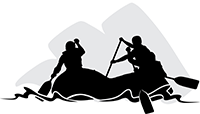

Overview
Purpose
"Strengthen the bond of man with nature by bringing a thrill of life back into a stale, steel world. Through Roaring Oar, the customer will be emboldened to connect and be revitalized by the raw power water and rock bring to a racing heart." - CEO and Founder, Connor Hopkins
Audience
We are aiming to catch the attention of the 9-5 person and adrenaline junkies alike. By providing a wide variety of Expedition Guides, we can host the most soothing float down memory lane or really rev up the speed through an incessant white mist violating your space. This level of personalization in the market hasn't been addressed yet, giving the regular person the chance to experience such a thrill right after just getting their feet wet. To keep it simple, we will make ourselves available to everyone by a website, so as not to cause mobile frustrations for those less inclined to technological savvy.
Branding
Website Logo
Style Guide
Color Palette
Palette URL:
https://coolors.co/11270b-5d737e-fcf7f8-fc440f-de6449| Primary | Secondary | Accent 1 | Accent 2 |
|---|---|---|---|
| #FCF7F8 | #5D737E | #395c30 | #DE6449 |
Typography
Heading Font: Kalam
Paragraph Font: Quicksand
Normal paragraph example
The best Whitewater Rafting in Colorado, White Water Rafting Company offers rafting on the Colorado and Roaring Fork Rivers in Glenwood Springs. Since 1974, we have been family owned and operated, rafting the Shoshone section of Glenwood Canyon and beyond.
Colored paragraph example
Trips vary from mild and great for families, to trips exclusively for physically fit and experienced rafters. No matter what type of river adventures you are seeking, White Water Rafting Company can make it happen for you.
Navigation
Site Map
Wireframes
Home